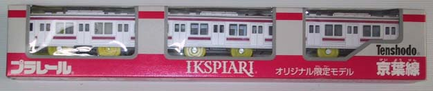
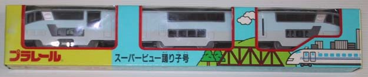
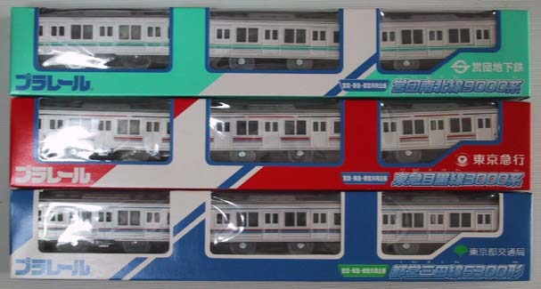
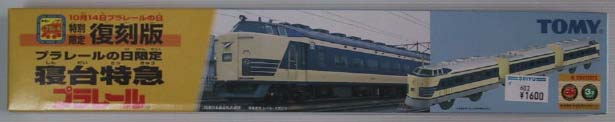
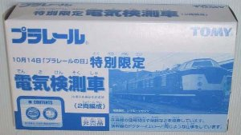

プラレールのレール1本も持っていないくせに、なぜか限定車両は持っている。まずは、東京ディズニーリゾート横のイクスピアリでしか買えない京葉線。前面パネルが、微妙に通常の205系と異なるのだ。限定2000台ということだったのだが、いまわそーでわないらしい(店頭で購入可能)。
次は限定車両ではなく、伊豆へ行ったときに乗ったスーパービュー踊り子号。
次は各車両9000台限定の、営団南北線と東急目黒線と都営三田線。それぞれ、営団・東急・都営の各駅に行かなければ入手はできないのだ。でも、まだ駅によっては残っているらしい。
次は「プラレールの日」限定の、復刻版583系「はつかり」。むかーし持っていたけど、それは屋根の塗装がないバージョン。"プラレールの日限定"とわゆーものの、店頭在庫は多い。ちなみに「プラレールの日」は「鉄道の日」と一緒で、10月14日。
トミプラクラブの会員になっていないともらえない、特別限定プラレール。今年は、電気検測車。一年に一度しかもらえないので、ヘンなのが来たら泣いちゃうぞ。年会費は、1200円ナリ。
 2001/11/054年ぐらい前からMP3プレーヤーが欲しいと言い続けていたが、クリエイティブから出たやつ(リンク切れ)はなかなかよさげ。ただ小さいのはいいんだけど、メモリが32MBしかない上に増設メモリがMMC(マルチメディア・カード)でやんの。とほほ(死語)……うちわ、CF(コンパクト・フラッシュ)派なのよ～。COMPAQの新しいノートPC(リンク切れ)もスペック的には食指がそそられるのだが、デザイン的にはいまいちいまにいまさんいまし(いくつだ?)。一番魅力的なのは、「彼女と彼女の猫」Movies and SoundTracksだな。いや、マジで買っちゃおーかなーなんて。
2001/11/10実家の参号機(EVA-03)を、OSから再導入＆再設定……と思ったのだが、その前にCOM2が使えないかどうか試してみる。とりあへずBIOSをUpdateして、COM1で試すがNG。COM2はBIOSで殺してあったので、Enabledにして再起動。TAの接続先(元?)を、COM2に変更……NGだが、メッセージがかわった。「ダイアル先のコンピュータが応答しません」になった。コントロールパネルのモデムの検出結果では、ステータスが表示されるようになった。もう一度、PCを再起動する……OK。う～ん、前回これを試しておけば……のアフターフェスティバル。
実家のハブをPLANETのEH-500(5ポート, 10BASE-2/T)から、NETGEARのEN104TP(4ポート, 10BASE-T)にかえる。以前から遅かったんだけど、MN128-SOHO SL11が同じ10BASEなのにそれほど遅くないことから、ちとあやしいと思うようになった。で、はるか昔(1997年下期から1998年上期だったような)に買ったハブに交換してみた。すると数百MBのコピーに1時間以上かかっていたものが、数分で終了。実効速度が2.4Mbit/sだったとしても10分で180MBいく計算だから、おかしいと思っていたんだ←てゆーか、もっと早く気づけ。
2001/11/15実家のPC達にバックアップ環境が実質的に存在しないことを前に書いたが、徐々にHDDの空き容量が少なくなりつつある今日この頃、いよいよホントに何かを考えなければならぬのかも。データだけMO(128MB)に吸い上げるのは、もはや無理の領域に入っている……というか、せっかくなのだからフル・バックアップとリストアが可能なのがベスト。やっぱり、CD-R/CD-RWドライブを買うかな～。初号機と参号機には両方ともDVD-ROMドライブが搭載されていることを考えると、DVD-Rでもいいのか。DVR-103、ほじ～よ～。
2001/11/21プラレール。レールいっぱいセットとファーストトライセット紅葉(中身, レイアウト)を買う。おかげで(?)、さくらやポイントカードとビックポイントカードが手元に。後者は青梅線をモデルにしたセットで、行き先表示には奥多摩の文字が! とりあへずレイアウト3で走らせるが、その後レイアウト4変形で走らせることに。んが、やっぱり1Kだとスペースに無理がある。結局、土曜日の夜以来走らせていない。話は全然関係ないけど、XHTMLに移行……するのはかなり無理っぽいので、とりあへずタグを小文字にしてみる。ゴールは遠い。
Dreamcast用のマイク・デバイスを探すが、みつからない。もはや単体では、売っていないのだろうか。そこで前々からシーマンをプレイしたいと言っていたので、「シーマン2001年対応版」を購入。で、とりあへず本来の目的である「コジコジ劇場」はおいといて、シーマンをプレイする。ん～、まだ大人になっていないせいか、あんまし会話ができん。しょーがないので、コジコジとお話することにした……がっ! なんということか、コジコジはシーマンよりも身勝手な振る舞いをするではないかっ!! 人気に溺れて、変わってしまったのか!?
一方的な話しかけと問いかけに終始し、こちらのコミュニケーションをなんとかしてとろうとする態度を無視しての退場。し、信じられん。これが、エヴァの本当の姿……でねくて、こども達に支持されたキャラクターだというか。いや、待てよ。こうした態度をとり続けたからこそ、番組は再び「ちびまる子ちゃん」へと回帰したのではなかろうか。人類の存亡に関わる深い謎を残したまま、シーマンの飼育に戻る。んが、コジコジに憤っている間に、お嫁さんがかなりすすめた模様。もう大人になっとるやん。それにしても、生意気な連中だな。
2001/11/22弐号機(VAIO NOTE 505X)を起動しようとしたところ「config.sysの1行目が理解できなーい」と言ってくる。himem.sysが見つからないのでロード不可というメッセージを出して、コマンドプロンプトで起動した。再起動すると、今度もhimem.sysがないといってコマンドプロンプトで起動する。
dir /s himem.sys
で確かめても、ちゃんとc:¥windowsにあるし、cabsディレクトリの中に入っているものと同じだ。NICを抜いて起動してみると、なんと「Operating System not found」とか言われてしまう。当然、そこでストップ。をひをひをひをひをひ。やばいよやばいよやばいよ(出川風)。落ち着いて、もう一度電源を入れてみる。今度は、OK……いまのわ、一体なんだったんだ。心臓に悪い。
2001/11/24紅葉狩り。青梅線奥多摩駅の3駅手前、古里(こり)で下車。新宿から立川まで30分かそこらなのに、立川からは1時間もかかるんですぜ、旦那。駅のトイレは、おばちゃん達で大行列。公衆トイレが先にあるようなので、先行する。すると、駐車場の中にそれらしきものを発見。入ろうとすると、小さいプレハブの中からぢーさんが窓を開けて「一声かけてからにしろ」と言い出す。案内図にあった公衆トイレなのか確認したところ、そうではないという。そこで勘違いした旨を説明し謝罪するが、ぢーさんは「一声かけてからにしろ」を繰り返すばかり。
どうやら彼は我々をどうやっても「失礼な二人組みの若い奴等」という最初の定義から変更することに納得を得ないらしいので、捨象。さっさと、鳩ノ巣へ向かう。鳩ノ巣で、お腹が減ったので食事。「ギャラリーぽっぽ」というところで、牛タンシチューと野菜をまるごと煮込んだ料理を食す。美味なり。オーナーのおばちゃんのキャラクターも、なかなかよろし。白丸ダム・白丸湖・数馬峡を歩いて、奥多摩に到着……の前に、もえぎ橋を渡って「もえぎの湯」へ。んが、混雑で入場制限ならぬ入湯制限。13:50の時点で40分待ち。まーでも、紅葉シーズンなのでこんなもんでしょう。
15:00すぎに出発して、奥多摩駅まで徒歩10分。電車に座るために、かなり早足で歩く。15:26のホリデー快速新宿行きは予想通り座れなかったので、15:37の立川行きに乗る。全車両、展望シート仕様。奥多摩発車の時点で、すでに空席はなし。さらに御嶽で、やまほど人が乗ってくる。青梅まで、ほとんど朝のラッシュ状態。青梅から若干空いた理由は、青梅始発に立っていた乗客が乗り換えたため。立川に着いたら、もう17:00少し前で真っ暗でやんの。奥多摩は遠い～。最後は新宿の小田急百貨店で、あさぎりとOER 9000形の限定プラレールを購入。
2001/11/27弐号機(VAIO NOTE 505X)が、かなりヤバイ。「Operating System not found」の件はVAIOのWebサイトに情報(リンク切れ)が掲載されていたが、まったく役に立たない。しばらくすると、何事もなく起動するんだから……と思っていたら、稼働中にブルースクリーンががが。もう寿命なのだろうか? なんて思っていたら、何回やっても「Operating Ssytem not found」で起動しなくなってしまった。あやしい兆候が出始めてからは頻繁にバックアップをとっていたので、すべてのファイルはサルベージ済みだが……しくしく(T_T)。
2001/11/28弐号機は、起動したりしなかったり……とにかく、いよいよ次のPCを考えなければならない。PanasonicのLet's noteのCF-A2R4H2なんて、いいかも。ネックは価格とサイズ。前々から欲しかった、VAIO NOTE 505の中古も考えちう。欲しい順位(?)は以下の通り。
ついに、弐号機(EVA-02)が起動しなくなった。で、それわいーんだけど(いいのか?)、シーマンも終了。ゲーム・クリアーといっていいのかどうか知らんが、シーマンは○へ○○○○いった。ほとんど私はノータッチだったので会話とかよー知らんのやけど、後半は色々と考えさせられる台詞を沢山ほざいていきやがりまちた。次は機会があったらPlayStation 2を買って、PlayStation 2版のシーマンをするかもね。まーそれわ、私が決めることでわないので。で、ノートPCの件ですが、HDDを買って換装するという案も考えちう。入手に難あり、か。
{kind=link}
{kind=link}
{kind=link}
{kind=link}